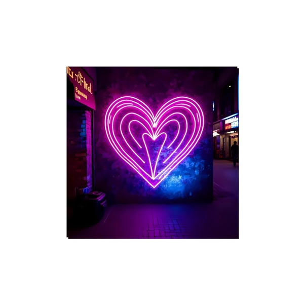

F.A.R.
Listen
F.A.R. is the music project of Frank Reyes, blending warm electronic and new age sounds with lyrics written from the heart about love, light and connection. His debut album We Were Made of Dawn is out now, and his second album, Into the Tide of Light, is out now.


Music produced and lyrics written by Frank Reyes.